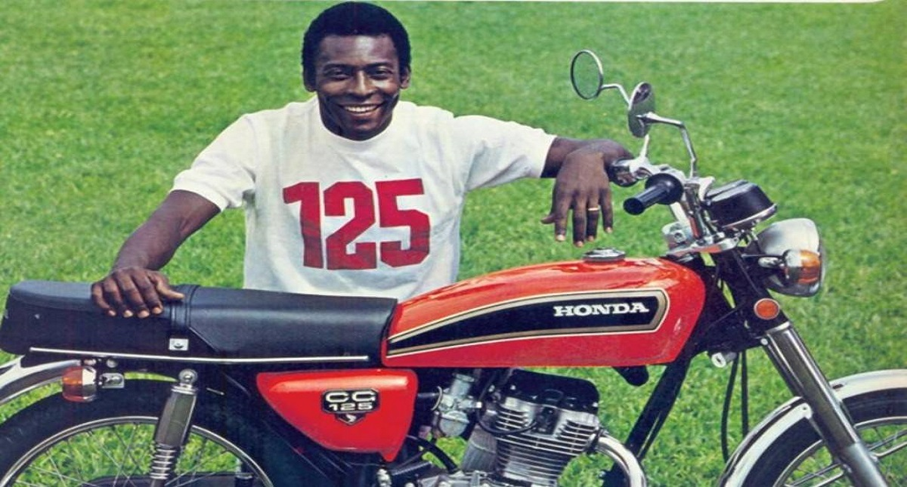

A história do motociclismo é repleta de modelos que transcenderam sua
função, tornando-se ícones de design e inovação. Convidamos você a
celebrar a rica história do motociclismo, lembrando os modelos que se
tornaram símbolos de uma era e que continuam a inspirar novas gerações de
motociclistas.
Motocicletas antigas: revivendo a história a cada curva.
A motocicleta, mais do que um veículo, representa um símbolo de liberdade,
aventura e camaradagem, um estilo de vida que transcende a paixão. A sensação
de bem-estar e a conexão com a estrada são experiências únicas difíceis de
expressar em palavras. Os modelos que marcaram a história do motociclismo,
por sua vez, despertam um entusiasmo que ecoa através do tempo.
Anos 1970, RD 50 e CG 125
Até a década de 1970, as scooters, como a Vespa e a Lambretta, eram os
modelos mais comuns no Brasil. Com a restrição às importações, o cenário
motociclístico nacional foi reconfigurado, abrindo espaço para o
crescimento de empresas como Honda e Yamaha, que, com seus investimentos,
consolidaram-se como líderes de mercado.
Em um mercado de motocicletas limitado nos anos 70, a RD 50 e a CG 125
destacaram-se como modelos icônicos, apesar de suas diferenças técnicas.
Ambas marcaram época e a Honda ainda contou com Pelé em sua publicidade.

PELÉ JUNTO A MOTO HONDA CG 125 - 1976
Anos 1980, CB 750 e RD 350
Na década de 1980, enquanto as motocicletas de pequena cilindrada
dominavam o cenário nacional, duas máquinas se destacaram como ícones de
uma nova era: a Honda CBX 750F e a RD 350. Estes modelos, que
personificavam poder e desempenho, continuam a ser lembrados e valorizados
no mercado de motocicletas usadas, refletindo sua importância histórica e
cultural.
A rivalidade entre a Honda CBX 750F (Sete Galo) e a Yamaha RD 350 (Viúva
Negra) é um capítulo icônico da história do motociclismo brasileiro. A CB,
inicialmente importada e posteriormente nacionalizada, destacava-se como a
principal esportiva da Honda em âmbito global, oferecendo potência e
imponência. Em contrapartida, a RD, produzida na fábrica da Yamaha em
Manaus, era uma motocicleta mais leve e ágil, que se destacava pela sua
manobrabilidade.
Anos 1990, Suzuki Hayabusa
Com a abertura do mercado brasileiro às importações na década de 1990, os
entusiastas de moto esportivas foram presenteados com uma variedade de
modelos vindos do Japão e da Europa. A busca pela velocidade e pelo
desempenho tornou-se o foco principal, impulsionando a competição entre as
marcas e o desenvolvimento de novas tecnologias.
A Suzuki Hayabusa (GSX 1300R), lançada em 1998, foi criada com o propósito
de ser a moto mais rápida do mundo, ultrapassando a marca de 300 km/h. Sua
chegada ao Brasil representou um marco no mercado de motocicletas de alta
performance. O modelo, que se destaca por seu design e desempenho,
permanece em comercialização até os dias atuais, em sua terceira geração.
SUZUKI HAYABUSA (GSX 1300R) - 1998
SUZUKI HAYABUSA TERCEIRA GERAÇÃO- 2022
A paixão por moto transcende o tempo, reunindo aficionados que
apreciam a história e o legado da indústria motociclística. Os modelos
apresentados nesta seleção ilustram a capacidade de inovação e a
influência duradoura que algumas motocicletas exercem sobre o mercado e a
cultura.
Esperamos que tenha apreciado esta publicação e o incentivamos a
divulgá-la entre seus contatos que compartilham o mesmo entusiasmo por
moto clássicas.